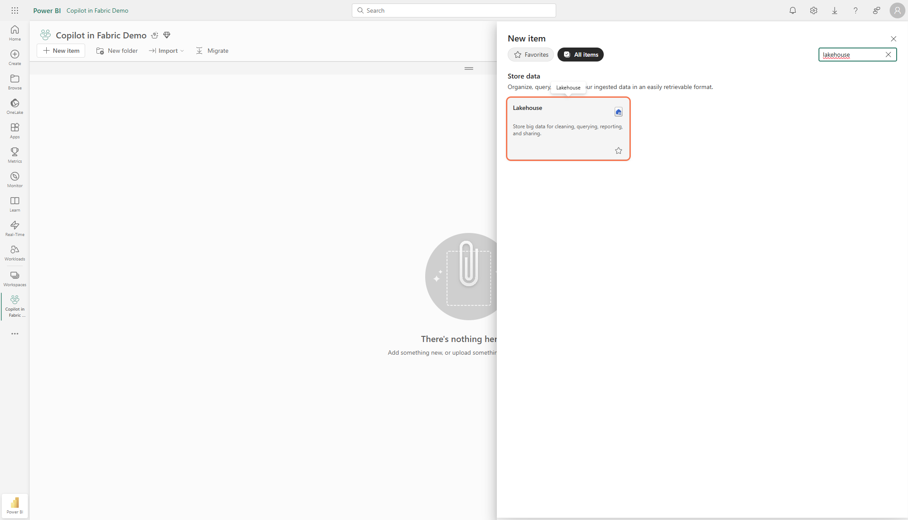
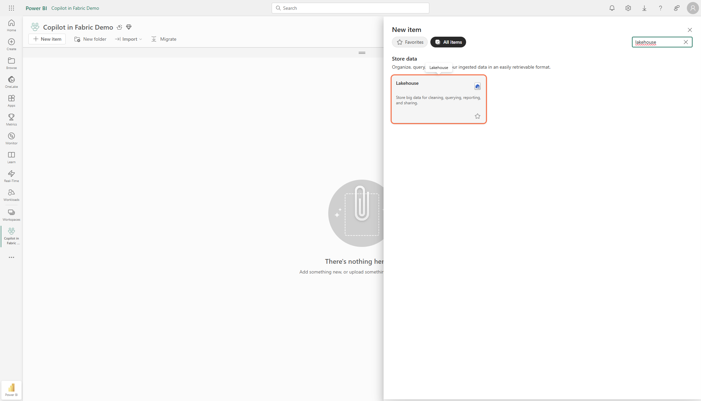
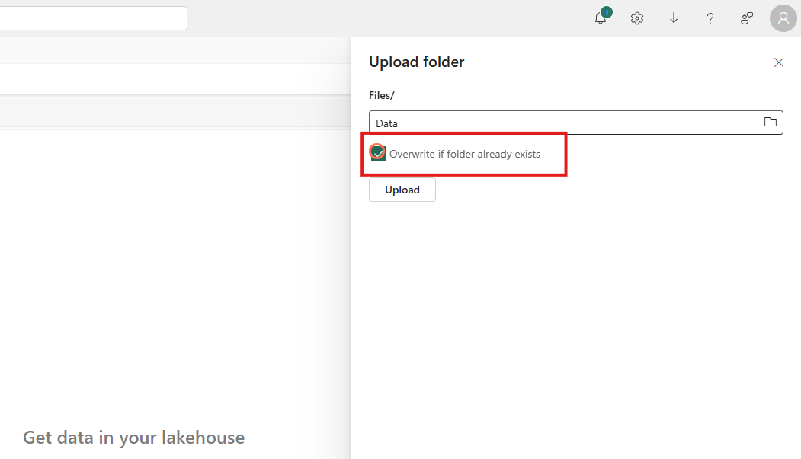
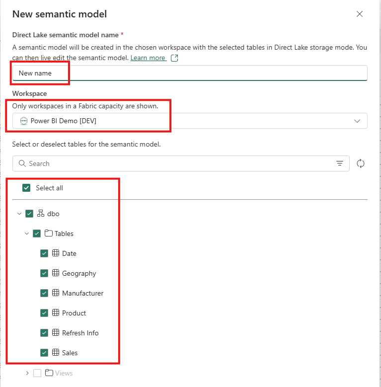
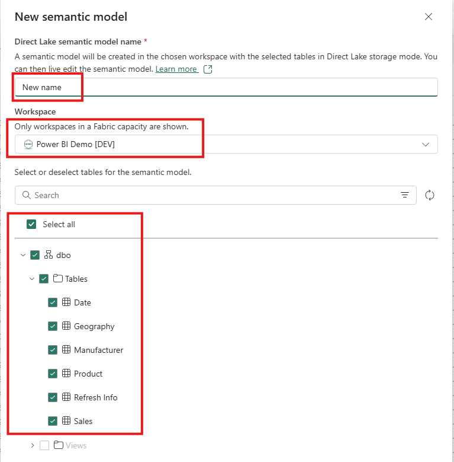

Session 1 – Foundation: Fabric & Copilot (60 min)
Session Overview
In this session, you will get hands-on experience with Microsoft Fabric and Copilot. You’ll create a Lakehouse, import data, transform it with Dataflow Gen2, and generate a semantic model for analytics.
Step-by-Step Instructions
Demo of Copilot in Fabric
Follow along in your own environment or just watch.
-
Locate the Copilot icon on the left navigation rail and inside Lakehouse/Notebook experiences. Confirm both exist.
-
Open Copilot in Power BI Service.
Open any existing report and open the Copilot pane (“Ask data questions”) to see Copilot inside reports.
Data Sourcing
Create a Lakehouse, import data, and transform it with a Dataflow Gen2.
-
Navigate to the workspace list and select My Workspace.

-
Create a Lakehouse:
Click New ► Lakehouse, name it lh_demo, then click Create.
-
Search for "Lakehouse" and select the Lakehouse option.
 
 -
Name it
lh_demoand click Create. -
Upload the provided Data folder
Download here and upload into /Files.
Right-click on the /Files folder in the Lakehouse and select Upload Folder. -
Select "Overwrite existing files" and then click Upload.


-
Create a Dataflow Gen2
Click New Item and search for Dataflow.


-
Import the
df_demo.pqtfile
Download the template if needed. -
Configure the Lakehouse Connection
Click the yellow button, sign in if needed, and click Create.
-
Update the Source Files query
Click the gear icon next to the last Navigation step and select the Files folder in the Lakehouse you created earlier.

-
Add a Default Data Destination
Bind the tables as shown in the screenshot below. -
Publish the dataflow.
-
Generate a Semantic Model
In the Lakehouse, click New semantic model, select your tables, and click Create. Name the new model direct lake demo. 
 -
Open Model view
Create 1‑many relationships to match the screenshot below.
-
Use Copilot to create a report
Prompt:
"Create me a report to show sales over time including both high-level and detailed information."
Reflection
- Checkpoint: Review your Lakehouse, Dataflow, and Semantic Model with your group.
- Discuss: What worked well? Where did you encounter challenges?
- Prepare: Bring your questions and findings to the next session.
Tips for Success: - If you get stuck, ask your instructor or a classmate for help. - Pause at checkpoints to review your progress. - Share your screen if you need troubleshooting assistance.
Let your instructor know if you need further clarification or support!